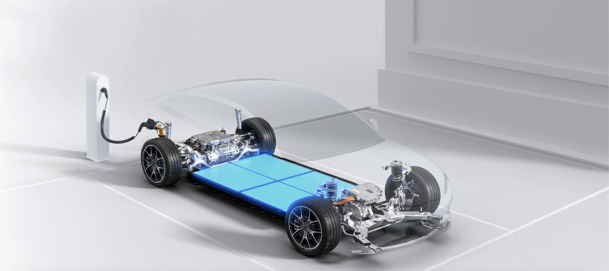
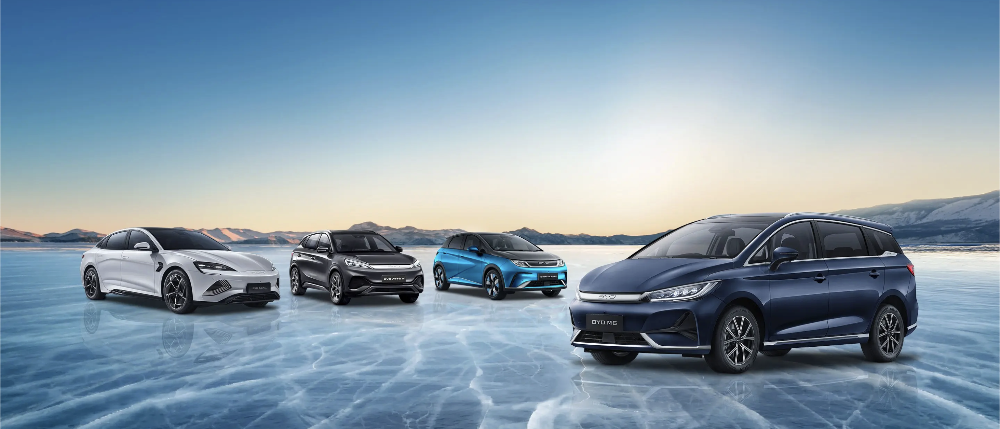
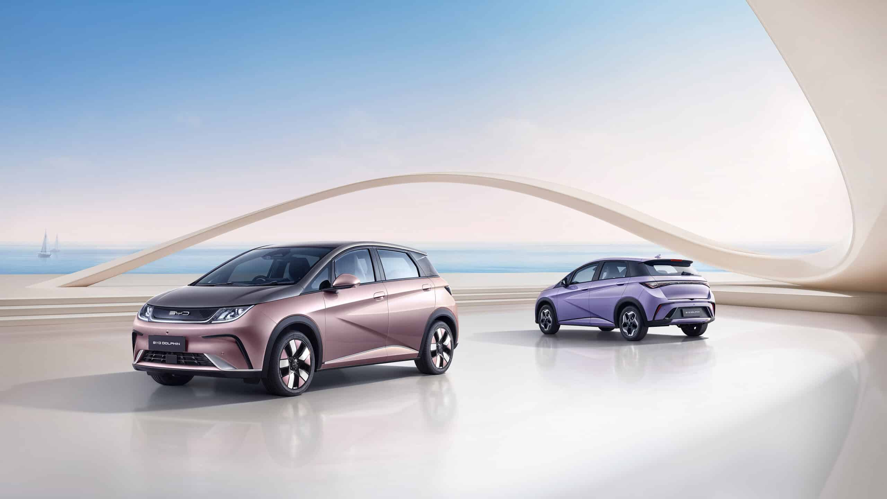
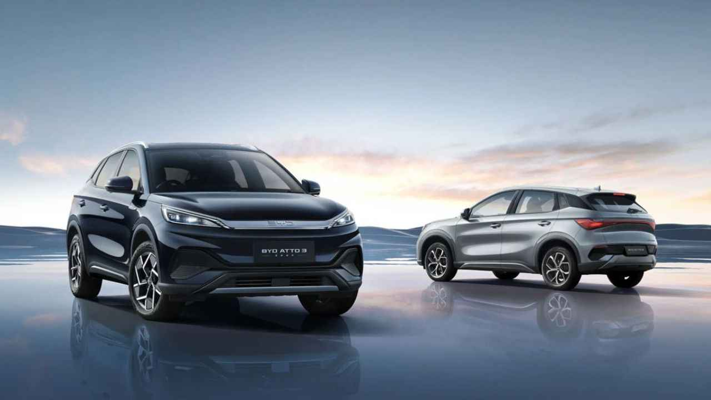
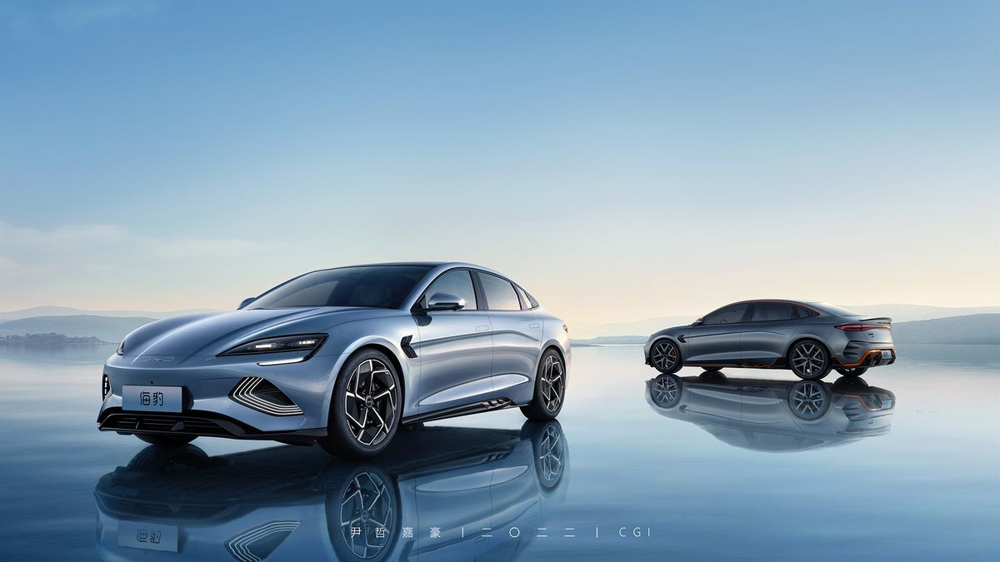
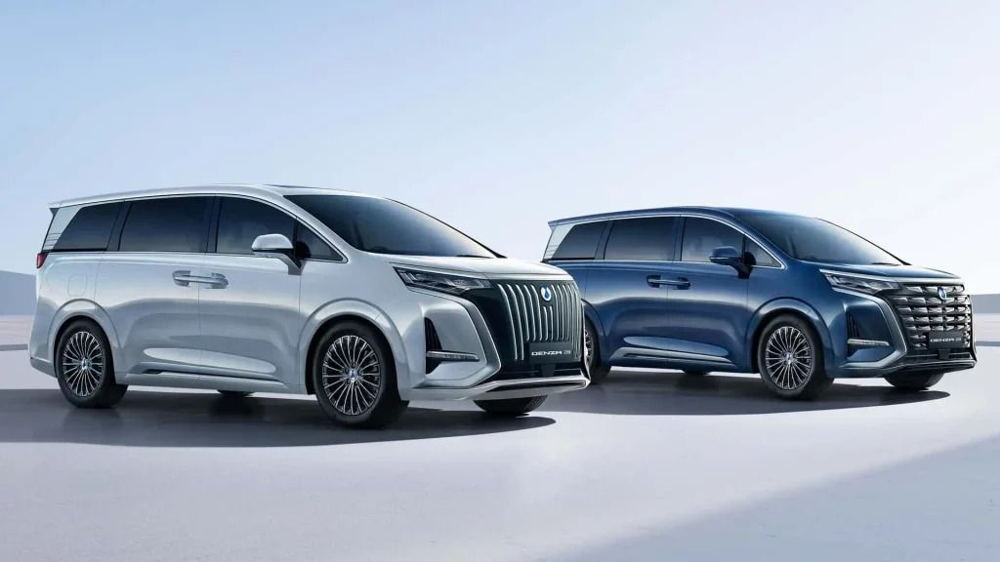
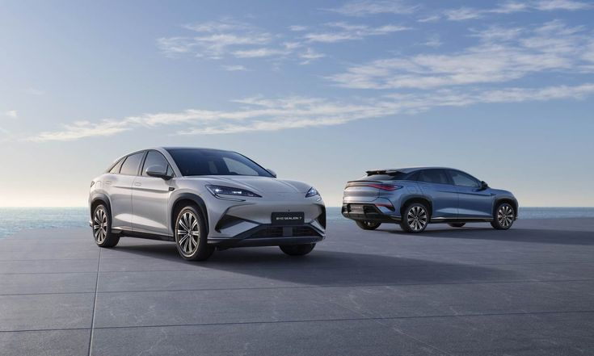
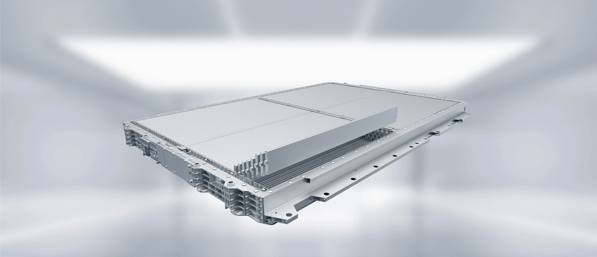

Tentang BYD

BYD (Build Your Dreams) adalah perusahaan teknologi tinggi asal China yang berdiri sejak 1994,
awalnya fokus pada produksi baterai isi ulang dan berkembang pesat menjadi salah satu pemain utama
di industri kendaraan energi baru. Saat ini BYD tidak hanya memproduksi mobil listrik (EV), tetapi juga
terlibat dalam sektor otomotif, elektronik, energi terbarukan, dan sistem transportasi rel, dengan visi
menghadirkan solusi energi tanpa emisi yang lebih bersih dan efisien. Perusahaan ini terdaftar di Bursa
Efek Hong Kong dan Shenzhen, serta telah memperluas jangkauannya ke lebih dari 80 negara dan lebih dari
400 kota di seluruh dunia.
BYD dikenal sebagai pelopor dalam pengembangan teknologi kendaraan listrik, termasuk baterai lithium-ion
yang inovatif dan sistem manajemen energi yang canggih. Selain itu, BYD juga memproduksi berbagai jenis
Kendaraan listrik, mulai dari mobil penumpang hingga bus listrik dan truk komersial. Dengan komitmen
terhadap keberlanjutan dan inovasi, BYD terus berupaya untuk mengurangi dampak lingkungan melalui solusi
transportasi yang ramah lingkungan dan efisien.
Teknologi BYD

BYD telah mengembangkan berbagai teknologi inovatif dalam kendaraan listrik, termasuk baterai
lithium-ion yang efisien dan tahan lama. Teknologi baterai Blade Battery BYD menawarkan keamanan yang
lebih baik dan kinerja yang unggul dibandingkan dengan baterai konvensional.
Selain itu, BYD juga mengintegrasikan sistem manajemen energi yang canggih untuk mengoptimalkan
penggunaan daya dan memperpanjang jarak tempuh kendaraan listriknya. Teknologi regeneratif braking BYD
memungkinkan kendaraan untuk mengubah energi kinetik menjadi energi listrik saat pengereman,
meningkatkan efisiensi energi secara keseluruhan.
Blade Battery Technology
Blade Battery BYD adalah teknologi baterai lithium-ion yang dirancang untuk memberikan keamanan
dan kinerja yang lebih baik. Baterai ini memiliki struktur yang unik dan dirancang untuk mengurangi
risiko kebakaran atau ledakan, serta meningkatkan efisiensi penggunaan energi.
e-Platform
e-Platform adalah platform teknologi modular yang dikembangkan oleh BYD untuk kendaraan listrik.
Platform ini memungkinkan pengembangan kendaraan listrik dengan berbagai spesifikasi dan desain,
serta mempercepat proses pengembangan dan produksi kendaraan listrik.
Motor Listrik Efisiensi Tinggi
BYD mengembangkan motor listrik berkinerja tinggi yang dirancang untuk memberikan efisiensi energi
maksimal dan daya keluaran yang stabil. Motor ini memiliki desain yang inovatif dan dirancang untuk
mengurangi kehilangan energi selama proses penggerak kendaraan listrik.
Sistem Manajemen Energi
BYD mengembangkan sistem manajemen energi yang canggih untuk mengoptimalkan penggunaan daya dan memperpanjang
jarak tempuh kendaraan listriknya. Sistem ini memungkinkan kendaraan untuk mengatur aliran energi secara efisien
antara baterai, motor listrik, dan komponen lainnya.
Model Kendaraan Listrik BYD

BYD menawarkan jajaran model kendaraan listrik yang beragam, mulai dari hatchback kompak hingga SUV keluarga dan MPV listrik,
masing-masing dirancang untuk segmen pengguna berbeda dengan fokus pada efisiensi energi, teknologi baterai canggih, dan
kenyamanan berkendara. Di Indonesia sendiri, BYD menghadirkan beberapa model yang populer di pasar dengan berbagai varian
dan fitur yang kuat untuk berbagai kebutuhan.
BYD Dolphin — Hatchback Listrik Praktis

BYD Dolphin adalah hatchback listrik yang dirancang untuk kenyamanan dan efisiensi penggunaan energi.
Dengan desain modern dan teknologi canggih, Dolphin menawarkan performa yang baik serta kemudahan dalam penggunaan sehari-hari.
- 49,92 kWh (standard) memberikan jangkauan sekitar 301 km (CLTC)
-
60,48 kWh (extended) mampu menjangkau hingga sekitar 405 km (CLTC)
Tenaganya mencapai sekitar 150 kW dengan top speed 160 km/jam serta akselerasi gesit untuk kelasnya.
Kabinnya luas dengan infotainment layar besar 12,8″ dan fitur terkini seperti sistem pendingin ganda serta ADAS standar.
BYD Atto 3-SUV Listrik Kompak

BYD Atto 3 adalah SUV listrik kompak yang menawarkan kombinasi antara performa, kenyamanan, dan teknologi canggih.
Dengan desain yang stylish dan fitur-fitur modern, Atto 3 cocok untuk berbagai kebutuhan berkendara.
- 71,7 kWh (standard) memberikan jangkauan sekitar 420 km (CLTC)
-
60,48 kWh (extended) mampu menjangkau hingga sekitar 405 km (CLTC)
Tenaganya mencapai sekitar 150 kW dengan top speed 160 km/jam serta akselerasi gesit untuk kelasnya.
Kabinnya luas dengan infotainment layar besar 12,8″ dan fitur terkini seperti sistem pendingin ganda serta ADAS standar.
BYD Seal— Sedan Listrik Premium

BYD Seal adalah sedan listrik yang diposisikan di segmen yang lebih premium dengan jangkauan baterai panjang dan performa tinggi.
Beberapa varian tersedia termasuk model Performance dengan penggerak dual-motor:
- Kapasitas baterai besar (sekitar 82,56 kWh) yang memberikan jangkauan panjang hingga sekitar 570 km (WLTP)
-
Versi Performance mampu akselerasi sangat cepat, menjadikannya kompetitif di segmen EV sport sedan
Desainnya mengikuti konsep “Ocean Aesthetics” dengan garis bodi dinamis, kualitas interior tinggi,
serta fitur keselamatan dan hiburan mutakhir.
BYD Denza D9 — MPV Listrik Keluarga

Denza D9 berada di kelas MPV premium dengan interior mewah, fitur hiburan modern, dan kenyamanan tinggi untuk penumpang serta keluarga besar.
BYD Sealion 7

BYD juga hadir dengan SUV coupe Sealion 7, yang menawarkan performa kuda lebih tinggi, fast charging, serta fitur kesalamatan dan kenyamanan kelas atas.
Ini cocok untuk pengguna yang ingin kombinasi sporty SUV dan EV premium.
Keunggulan Yang dimiliki BYD

Kendaraan listrik BYD menonjol karena perpaduan antara inovasi baterai, desain struktur kendaraan, efisiensi energi, dan standar keselamatan tinggi.
BYD tidak hanya membuat mobil listrik, tetapi membangun ekosistem teknologi dari baterai hingga struktur bodi kendaraan. Inilah yang membuat produk
BYD unggul secara teknis, efisien dalam penggunaan, dan relevan untuk masa depan transportasi berkelanjutan.
Blade Battery (LFP paling aman di industri)
BYD menggunakan baterai LFP berbentuk “blade” yang terkenal sangat stabil terhadap panas dan minim risiko kebakaran. Selain aman, baterai ini
memiliki siklus hidup panjang dan performa yang konsisten untuk penggunaan jangka panjang.
CTB - Cell to Body (Struktur Lebih Kuat & Efisien Ruang)
Teknologi Cell-to-Body (CTB) membuat baterai menjadi bagian dari struktur rangka mobil, bukan hanya diletakkan di bawah lantai. Ini menghasilkan:
- Struktur bodi lebih kaku dan kuat (rigidity meningkat)
- Keamanan tabrakan lebih baik
- Ruang kabin lebih lega karena tidak ada “layer” tambahan
- Bobot kendaraan lebih ringan, meningkatkan efisiensi energi dan performa berkendara
e-Platform 3.0 (Integrasi Total Sistem Kendaraan)
BYD bikin platform khusus EV dari nol: baterai, motor, kontrol, pendingin didisain jadi satu sistem.
Banyak EV lain itu platform mobil bensin yang “di-EV-kan”.
Vertical Integration (BYD bikin sendiri hampir semua komponen)
BYD produksi sendiri baterai, chip, motor, sampai sistem kontrol.Artinya: biaya lebih efisien, kontrol kualitas tinggi, dan inovasi lebih cepat
dibanding brand yang bergantung ke supplier.